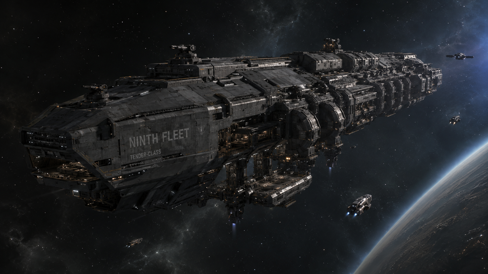
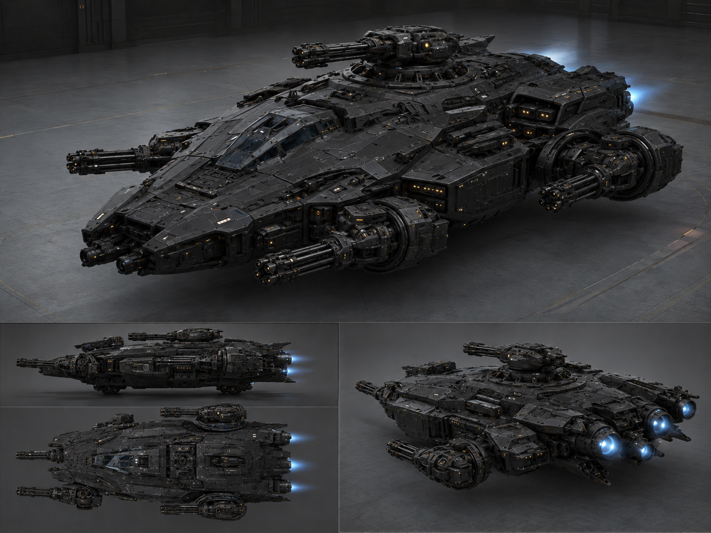
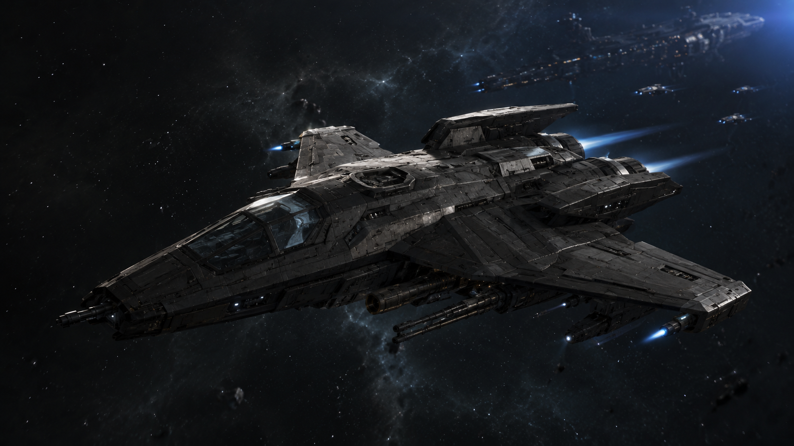

Network fleet
The ships.
The fleet exists because the universe contains things that respond only to the credible possibility of force, and because protecting Earth required being credible. The doctrine has not changed since the network's founding: minimum force, always warn before striking, never target civilian infrastructure.




Fleet disposition and full capability specifications are not disclosed. What is shared here is a record, not an inventory.